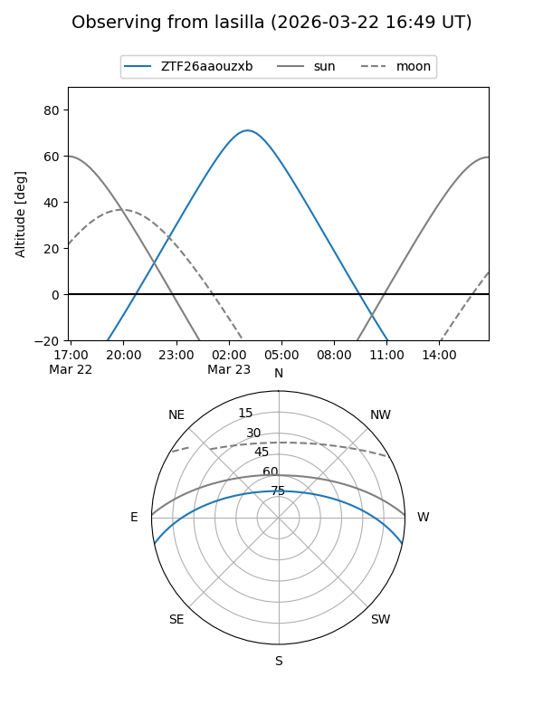
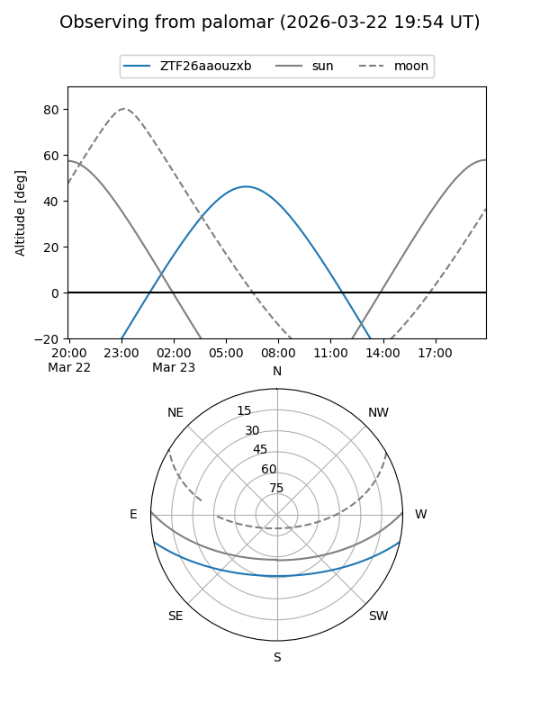

ZTF26aaouzxb
Target ZTF26aaouzxb at 2026-03-23 08:23
Aliases and brokers:
FINK: link
Lasair: link
ALeRCE: link
alt names
ZTF26aaouzxb (ztf,fink_ztf)
Coordinates:
equatorial (ra, dec) = 155.7124,-10.23474
equatorial (HMS+DMS) = 10:22:50.98,-10:14:05.06
galactic (l, b) = (253.8898,+38.10403)
Flags:
Photometry:
last ztfg=17.45
1 ztfg detections
Lightcurve
Visibility


Additional plots